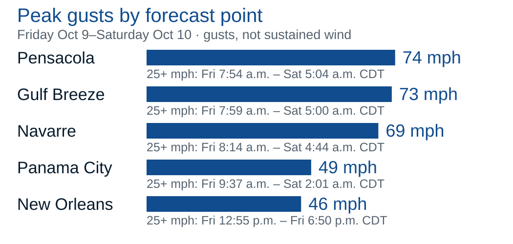

Current eastern corridor
Highest current supplied point concern: western Florida Panhandle.
Response: Prioritize wind, rain, coastal access and backup-power readiness.
 NorthStarNorthStar
NorthStarNorthStarOct 7, 6:15 a.m. CDT / 7:15 a.m. EDTTropical Storm Isaias
Friday hurricane risk. Prioritize the western Panhandle.
Prepare Thursday for Friday impacts. StormGeo’s Florida 25+ mph windows begin around 8–9:40 a.m. CDT Friday.
Pensacola, Gulf Breeze and Navarre have the strongest supplied point winds and 6–10 inches of private-scenario rainfall.
NHC track confidence is below average. A change in the northward turn can move the strongest wind and rain corridor.
StormGeo / NHC · over the Gulf, not at a site
Navarre / Gulf Breeze / Pensacola
Complete readiness Thursday, ahead of Friday’s winds
| StormGeo city point | Upper sustained (mph) | Gust (mph) | Probability ≥39 mph | Rain (in) |
|---|---|---|---|---|
| New Orleans | 26 | 46 | 28% | 2–5 |
| Panama City | 35 | 49 | 41% | 3–6 |
| Navarre | 51 | 69 | 60% | 6–10 |
| Gulf Breeze | 53 | 73 | 58% | 6–10 |
| Pensacola | 56 | 74 | 62% | 6–10 |
Verify site contacts, continuity plans and response priorities.
Recommended target; rain may precede the main wind windows.
Florida winds morning; New Orleans afternoon. Monitor tornado alerts.
Verify access; StormWatch regional window extends through Sunday morning.


| Question | NOAA / NHC / NWS | StormGeo | Operational meaning |
|---|---|---|---|
| Cyclone strength | NHC peak: 110 mph sustained | StormGeo peak: 100 mph sustained | Both forecast hurricane strength; these are core winds, not city winds. |
| Track / rain corridor | NHC: east shift, below-average track confidence | 4a: shift east of Mobile Bay next full cycle | Keep readiness flexible on both sides of the forecast center. |
| Wind odds ≥39 mph | NHC: NOLA 11% · Pensacola 56% · Panama City 45% | StormGeo: 28% · 62% · 41% | Different point definitions and windows; do not average. |
Highest current supplied point concern: western Florida Panhandle.
Response: Prioritize wind, rain, coastal access and backup-power readiness.
Strongest effects move with the center and asymmetric bands.
Response: Reorder site priorities each cycle; center lines are not impact boundaries.
Stronger winds combine with flooding, outages and blocked access near landfall.
Response: Plan for loss of multiple services; no invented odds, depths or outage duration.
Review SOPs, critical processes and tested backup arrangements by Thursday.
Prioritize exterior protection, water mitigation and coastal-access contingencies.
Use the Hilton brief; check local winds, rain and access.
Align escalation contacts, response priorities and damage documentation.
NorthStar can support readiness and recovery. Pre-loss planning · Water mitigation · Structural drying · Facility support
Call 800.283.2933Oct 7: full/site 4 and StormWatch 3 a.m. CDT; 4a 4 a.m. No refreshed site tables.
Advisory 3: Oct 7, 4 a.m. CDT. No coastal watches/warnings then.
Oct 7: vicinity grid 5:21 a.m. CDT; discussion 4:22 a.m. Not rooftop wind.
Issued Oct 7, 5:03 a.m. EDT; valid Fri 7 a.m.–Sat 7 a.m. CDT.
Oct 7 runs: supporting model guidance; no blended forecast or calibrated scenario odds.
Prepared for operational planning. Follow current official alerts and local instructions.
Back to TL;DR